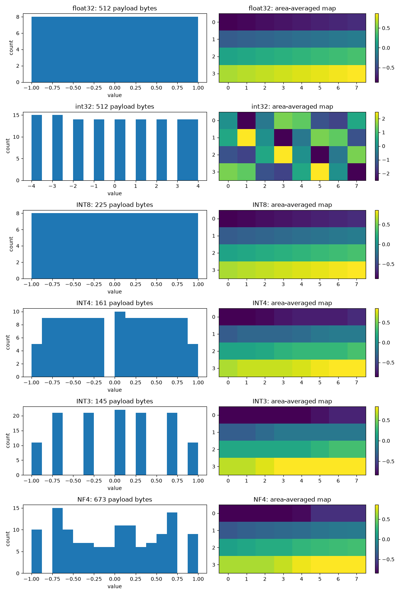
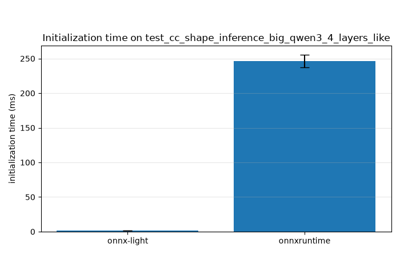

Note
Go to the end to download the full example code.
Statistics of float, integer, and quantized tensors#
This example uses
onnx_light.onnx_core.tensor_statistics.compute_tensor_statistics()
to inspect a float tensor, an integer tensor, and four quantized tensors:
INT8, INT4, INT3, and NF4. It prints descriptive statistics and plots each
distribution alongside an area-averaged rectangle map.
Statistics of encoded tensors describe their reconstructed numerical values,
not their packed codes. Their dtype is the logical tensor dtype, while
size_bytes counts only the encoded payload, excluding descriptor metadata
and shared parameters. Inline scales and codebooks can make a small encoded
tensor larger than the original. The portable encodings used here are onnx-light
representations, not vendor-compatible files.
import matplotlib.pyplot as plt
import numpy
import onnx_light.onnx.numpy_helper as onh
from onnx_light.onnx_core.quantization import (
QuantizationFormat,
make_quantization_plan,
quantize_tensor_proto,
)
from onnx_light.onnx_core.tensor_statistics import compute_tensor_statistics
Creates six tensors#
The integer tensor has repeated values so its distinct count is smaller than its element count. All four quantized tensors encode the same float tensor, allowing their distributions and payload sizes to be compared. INT8, INT4, and INT3 use signed affine codes with explicit scales. INT3 uses the portable Q3_K profile with 3-bit codes in [-4, 3]. NF4 uses its built-in normal-float codebook with scale 1. No calibration is performed.
floats = numpy.linspace(-1, 1, 128, dtype=numpy.float32).reshape(8, 16)
integers = (numpy.arange(128, dtype=numpy.int32).reshape(8, 16) % 9) - 4
tensors = {"float32": floats, "int32": integers}
for name, profile, scale in (
("INT8", QuantizationFormat.INT8, 1.0 / 127),
("INT4", QuantizationFormat.INT4, 1.0 / 7),
("INT3", QuantizationFormat.Q3_K, 1.0 / 3),
("NF4", QuantizationFormat.NF4, 1.0),
):
plan = make_quantization_plan(profile, floats.size, block_size=32)
run = plan.run(0)
blocks = run.blocks
for block in blocks:
block.scale = scale
run.blocks = blocks
plan.set_run(0, run)
tensors[name] = quantize_tensor_proto(onh.from_array(floats), plan)
Computes descriptive statistics#
Minimum, maximum, mean, shape, count, dtype, and payload size are always
available. distinct_count is supplied for integer and quantized tensors,
but is None for ordinary floating-point tensors. Median and quantiles
are opt-in because they require order statistics.
Histograms require at least ten elements. Here all tensors have 128 elements and explicitly request 16 bins. Quantiles are returned in the requested order.
statistics = {}
for name, tensor in tensors.items():
stats = compute_tensor_statistics(
tensor, bins=16, median=True, quantiles=[0.25, 0.75], rectangle_shape=[4, 8]
)
statistics[name] = stats
print(f"{name}: dtype={stats.dtype}, shape={stats.shape}, count={stats.count}")
print(f" size_bytes={stats.size_bytes}, distinct_count={stats.distinct_count}")
print(
f" min={stats.min:.6g}, max={stats.max:.6g}, "
f"mean={stats.mean:.6g}, median={stats.median:.6g}"
)
print(f" quartiles={stats.quantiles}")
float32: dtype=1, shape=[8, 16], count=128
size_bytes=512, distinct_count=None
min=-1, max=1, mean=0, median=0
quartiles=[-0.5, 0.5]
int32: dtype=6, shape=[8, 16], count=128
size_bytes=512, distinct_count=9
min=-4, max=4, mean=-0.0546875, median=0
quartiles=[-2.0, 2.0]
INT8: dtype=1, shape=[8, 16], count=128
size_bytes=225, distinct_count=128
min=-1, max=1, mean=0, median=0
quartiles=[-0.5, 0.5]
INT4: dtype=1, shape=[8, 16], count=128
size_bytes=161, distinct_count=15
min=-1, max=1, mean=0, median=0
quartiles=[-0.4642857238650322, 0.4642857238650322]
INT3: dtype=1, shape=[8, 16], count=128
size_bytes=145, distinct_count=7
min=-1, max=1, mean=0, median=0
quartiles=[-0.416666679084301, 0.416666679084301]
NF4: dtype=1, shape=[8, 16], count=128
size_bytes=673, distinct_count=16
min=-1, max=1, mean=-0.000995626, median=0
quartiles=[-0.5250730514526367, 0.4711866229772568]
Plots distributions and rectangle maps#
Histogram edges and counts come directly from the statistics result.
rectangle_map is a flat row-major list: reshaping it to
rectangle_shape produces a compact view of the tensor. Each pixel is
an area-weighted average, not a single sampled value.
fig, axes = plt.subplots(len(statistics), 2, figsize=(11, 16))
for (name, stats), (histogram, rectangle) in zip(statistics.items(), axes):
histogram.stairs(stats.distribution, stats.bin_edges, fill=True)
histogram.set_title(f"{name}: {stats.size_bytes} payload bytes")
histogram.set_xlabel("value")
histogram.set_ylabel("count")
image = rectangle.imshow(
numpy.array(stats.rectangle_map).reshape(stats.rectangle_shape), aspect="auto"
)
rectangle.set_title(f"{name}: area-averaged map")
fig.colorbar(image, ax=rectangle)
fig.tight_layout()

Total running time of the script: (0 minutes 1.038 seconds)
Related examples

Uses every portable quantization profile from Python

Benchmark the initialization steps: onnxruntime vs onnx-light
Gallery generated by Sphinx-Gallery
Example last updated
- Date:
2026-10-26